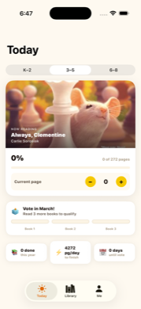
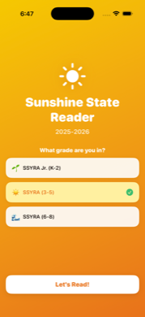
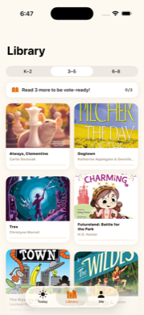

Log your reading progress, earn achievements, and find out when you've read enough books to cast your vote. Supports grades K-2, 3-5, and 6-8.

Log your current page and watch your progress grow toward the full reading list.
Read 3 books and you've earned your SSYRA vote. The app tells you exactly where you stand.
Celebrate milestones — first book, halfway done, speed reader, and more.
Daily reading reminders and a countdown to vote day keep you moving all year.
Looks great day or night with a warm, book-friendly dark mode.

